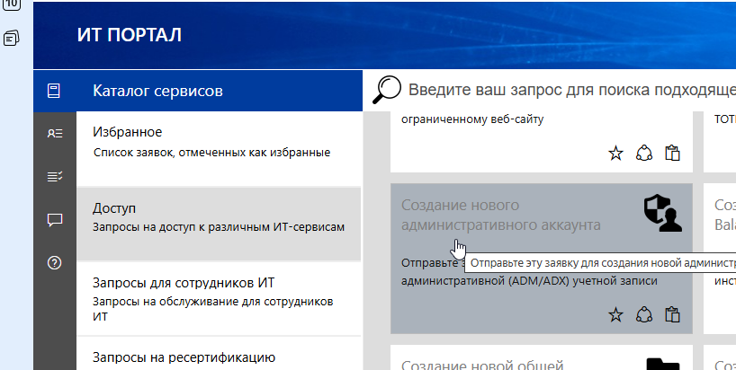

Создайте админский аккаунт
Для входа на виртуальные машины нужен административный аккаунт (ADM/ADX и доступ в корпоративный PAM через 2FA.
В ИТ Портале откройте каталог сервисов → раздел «Доступ» и оформите заявку «Создание нового административного аккаунта».
- Заявка создаёт новую административную (ADM/ADX) учётную запись
- Дождитесь подтверждения от IT Service Desk
